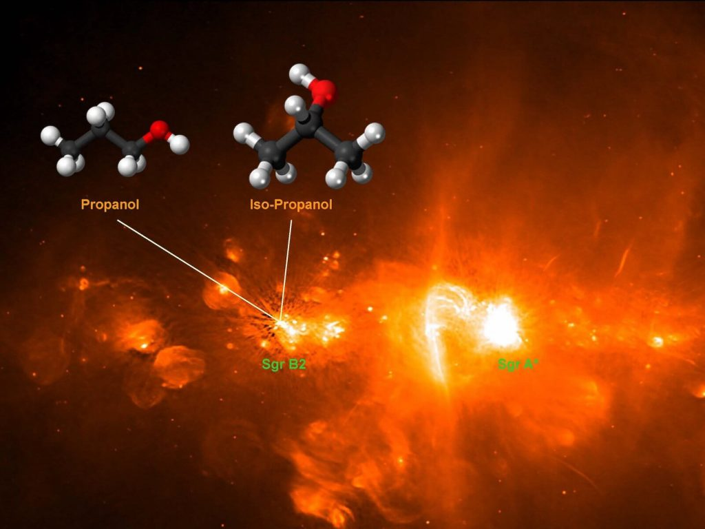

အခု ရှာတွေ့ခဲ့တဲ့ အရက်ပြန်ဟာ iso-propanol (isopropyl alcohol) လို့ ခေါ်တဲ့ အရက်ပြန် အမျိုးအစား ဖြစ်ပါတယ်။ ကမ္ဘာမြေ ပေါ်မှာတော့ သူ့ကို လက်ဆေး အရက်ပြန် ဆေးရည်တွေမှာ အဓိက ထည့်သွင်း အသုံးပြု ကြပါတယ်။
အခု ရှာဖွေ တွေ့ရှိမှုကို ဂျာမနီ နိုင်ငံ ဘွန်း မြို့က သုတေသီ တွေက ရှာတွေ့ခဲ့ ကြတာ ဖြစ်ပါတယ်။ ဒါဟာ အာကာသ ထဲမှာ ဒီ iso-propanol အရက်ပြန် မော်လီကျူး တွေကို ပထမဆုံး အကြိမ် ရှာဖွေ တွေ့ရှိမှုပဲ ဖြစ်ပါတယ်။
ဒီ iso-propanol (အိုင်ဆို ပရိုပါနောလ်) ဟာ အခုထိ အာကာသထဲ ရှာတွေ့ ပြီးသမျှ အရက် နဲ့ အရက်ပြန် မော်လီကျူးတွေ ထဲမှာ အရွယ်အစား အကြီးဆုံး မော်လီကျူး ဖြစ်ပါတယ်။
အရက် အုပ်စုဝင် မော်လီကျူး တွေဟာ အာကာသ ထဲမှာ အများဆုံး တွေ့ရတဲ့ မော်လီကျူးတွေ ဖြစ်ကြတယ်လို့ နက္ခတ် ပညာရှင် များက ဆိုပါတယ်။
အခု မော်လီကျူး တွေကို ဆက်ဂျီတေးရီးယပ်စ် နက္ခတ်ခွင်ရဲ့ B2 အပိုင်းမှာ (Sagittarius B2) ရှာဖွေ တွေ့ရှိ ခဲ့ကြတာ ဖြစ်ပါတယ်။ ဒီ အပိုင်းဟာ ကျွန်တော်တို့ မစ်ကီးဝေး ဂလက်ဆီရဲ့ဗဟိုနဲ့ နီးကပ်စွာ တည်ရှိနေပြီး ကြယ်သစ်တွေ မွေးဖွားရာ ရပ်ဝန်းလဲ ဖြစ်ပါတယ်။
ဒီ ရပ်ဝန်းမှာ အရင်ကလဲ အခြား ကာဗွန် အခြေခံ အော်ဂဲနစ် မော်လီကျူး အများအပြား ရှာတွေ့ ထားခဲ့ပါတယ်။
အခု ရှာဖွေ တွေ့ရှိမှုကို ချီလီ နိုင်ငံမှာ ရှိတဲ့ ALMA တယ်လီစကုပ် ကြီးကနေ ရှာဖွေ တွေ့ရှိခဲ့ကြတာ ဖြစ်ပါတယ်။
အာကာသ ထဲမှာ မော်လီကျူးတွေ ရှာဖွေတာ အခုမှ စတင်တာတော့ မဟုတ်ပါဘူး။ လွန်ခဲ့တဲ့ နှစ် ၅၀ ကျော် လောက်ကတဲက စတင် ရှာဖွေ နေခဲ့ကြတာ ဖြစ်ပါတယ်။
အခု အချိန်ထိ အာကာသ ဟင်းလင်းပြင် ထဲမှာ လွင့်မြောနေတဲ့ မော်လီကျူး အမျိုးအစား စုစုပေါင်း ၂၇၆ မျိုး ရှာဖွေ တွေ့ရှိ ထားပြီး ဖြစ်ပါတယ်။

(အော်ဂဲနစ် မော်လီကျူး ဆိုတာက ကာဗွန်ကို အခြေခံပြီး ဖွဲ့စည်းထားတဲ့ မော်လီကျူးတွေ ဖြစ်ကြပါတယ်။ ဒီ အော်ဂဲနစ် မော်လီကျူး တွေကို သက်ရှိတွေရဲ့ ကိုယ်ခန္ဓာ ထဲမှာ အဓိက တွေ့ရလေ့ ရှိပါတယ်။)
နောက်ပြီး ဒီ အာကာသ ထဲမှာ ဖြစ်ပေါ်လာတဲ့ အော်ဂဲနစ် မော်လီကျူး တွေဟာ ဘယ်လောက်ထိ ရှုပ်ထွေးတဲ့ မော်လီကျူးတွေ ဖြစ်မလဲ ဆိုတာကိုလဲသိချင် ကြပါတယ်။
ကျွန်တော်တို့ မစ်ကီးဝေး ဂလက်ဆီ ထဲမှာ အော်ဂဲနစ် မော်လီကျူးတွေ အများဆုံး ရှာဖွေ တွေ့ရှိခဲ့ရာ ရပ်ဝန်းဟာ Sagittarius B2 ဒေသပဲ ဖြစ်ပါတယ်။ ဒီဒေသဟာ မစ်ကီးဝေးရဲ့ ဗဟိုက မဟာ တွင်းနက်ကြီး (supermassive black hole) ဖြစ်တဲ့ Sagittarius A* နဲ့လဲ သိပ်မဝေး လှပါဘူး။
အခု သုတေသီ အဖွဲ့ဟာ ဒီ Sagittarius B2 ဒေသရဲ့ ဓါတုဗေဒ ဖွဲ့စည်းပုံကို လွန်ခဲ့တဲ့ ၁၅ နှစ်ခန့် ကတဲက စတင် လေ့လာခဲ့ ကြတာ ဖြစ်ပါတယ်။ သူတို့ အဖွဲ့ဟာ အရင်ကလဲ ဒီဒေသမှာ အော်ဂဲနစ် မော်လီကျူး အများအပြား ရှာဖွေ တွေ့ရှိ ခဲ့ပြီး ဖြစ်ပါတယ်။
လွန်ခဲ့တဲ့ ၁၀ နှစ် ခန့်က ALMA တယ်လီစကုပ်ကြီး တည်ဆောက် ပြီးစီး ခဲ့ပါတယ်။ အဲ့သည် အချိန် နောက်ပိုင်းမှာတော့ အာကာသ အတွင်း မော်လီကျူးတွေ ရှာဖွေရေး လုပ်ငန်းစဉ် တွေဟာ အယ်လ်မာ တယ်လီစကုပ်ကြီး ကျေးဇူးနဲ့ ပိုပြီး ပီပြင် လာခဲ့ ပါတယ်။
၂၀၁၄ ခုနှစ် နောက်ပိုင်းမှာ ALMA တယ်လီစကုပ် ကြီးကနေ အော်ဂဲနစ် မော်လီကျူး အသစ် ၃ မျိုးကို ရှာဖွေ တွေ့ရှိ ခဲ့ပါတယ်။ အခု propanol ရှာဖွေ တွေ့ရှိ မှုနဲ့ဆိုရင် ဒါဟာ အယ်လ်မာ ရဲ့ ၄ ခုမြောက် ရှာဖွေ တွေ့ရှိ မှုပဲ ဖြစ်ပါတယ်။
Propanol ဟာ အခုထိ အာကာသထဲ ရှာတွေ့ ပြီးသမျှ မော်လီကျူး အားလုံး အထဲမှာ အကြီးဆုံး မော်လီကျူး ဖြစ်ပါတယ်။ သူ့ကို ထုံးစံအားဖြင့် ပုံသဏ္ဍာန် နှစ်မျိုးနဲ့ တွေ့ကြ ရပါတယ်။ ပုံမှန် propanol နဲ့ iso-propanol ဆိုပြီး ပုံစံ နှစ်မျိုးနဲ့ တွေ့ကြရတာ ဖြစ်ပါတယ်။
အခု ဒေသမှာ ဒီ propanol မျိုးကွဲ isomer နှစ်မျိုး လုံးကို တွေ့ကြရတာ ဖြစ်ပါတယ်။
အခု တွေ့ရှိမှုဟာ အာကာသ အတွင်း iso-propanol မော်လီကျူး ကို ပထမဆုံး အကြိမ် ရှာဖွေ တွေ့ရှိတာ ဖြစ်သလို ကြယ်တွေ မွေးဖွားရာ ရပ်ဝန်းမှာ သာမန် propanol ကို ပထမ ဆုံးအကြိမ် ရှာဖွေ တွေ့ရှိတာလဲ ဖြစ်ပါတယ်။
ဒီ မော်လီကျူးတွေ ရှာဖွေရာမှာ ပညာရှင် တွေဟာ ဂလက်ဆီ ဗဟိုနား ရပ်ဝန်းက ထွက်လာတဲ့ အလင်းလှိုင်း တွေကို ရောင်စဉ် ခွဲပြီး လေ့လာခဲ့ ကြတာ ဖြစ်ပါတယ်။
ဒီ မော်လီကျူး တွေဟာ အလင်း ရောင်စဉ်က အချို့သော အရောင်တွေကို ဖြတ်သန်းခွင့် မပေးပဲ စုပ်ယူ ထားကြပါတယ်။ ဒါ့ကြောင့် ဒီ မော်လီကျူးတွေ ရှိတဲ့ အရပ်ဒေသကို ဖြတ်သန်းလာတဲ့ အလင်းရောင်မှာ အချို့သော အရောင် တွေ ပျောက်ဆုံး နေတာ (သို့) အားနည်းနေ တာကို တွေ့ကြရမှာ ဖြစ်ပါတယ်။
ဒီ ရပ်ဝန်းတွေကို ဖြတ်သန်းပြီး ကမ္ဘာကို ရောက်ရှိလာ ကြတဲ့ အလင်းရောင်ရဲ့ ရောင်စဉ်တွေကို ခွဲခြမ်းစိတ်ဖြာ ကြည့်ခြင်းအားဖြင့် ဒီ ရပ်ဝန်းမှာ ဘာ မော်လီကျူးတွေ ရှိနေလဲ ဆိုတာကို ဆုံးဖြတ်နိုင် ကြပါတယ်။
အခု တွေ့ရှိချက်ကို သုတေသန ဂျာနယ် တစ်စောင် ဖြစ်တဲ့ Astronomy & Astrophysics ဂျာနယ်မှာ တင်ပြ ထားတာ ဖြစ်ပါတယ်။
Ref: A sanitizer in the galactic center region | Phys